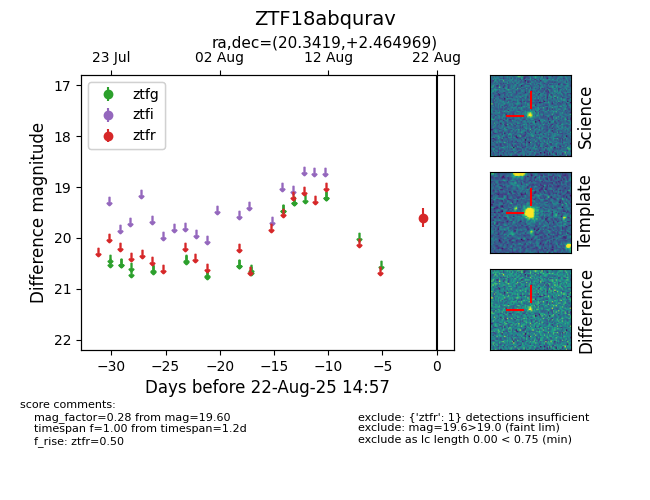

Target ZTF18abqurav at 2025-08-22 15:16, see:
FINK: fink-portal.org/ZTF18abqurav
Lasair: lasair-ztf.lsst.ac.uk/objects/ZTF18abqurav
ALeRCE: alerce.online/object/ZTF18abqurav
alt names
ZTF18abqurav (ztf,alerce)
coordinates:
equatorial (ra, dec) = (20.3419,+2.46497)
galactic (l, b) = (137.8028,-59.53985)
photometry
last ztfr=19.60
1 ztfr detections
